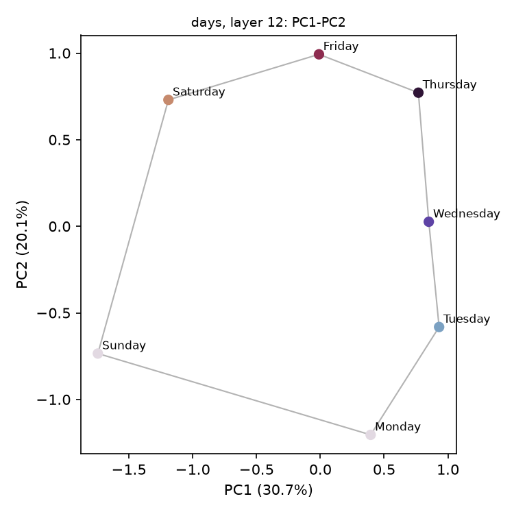
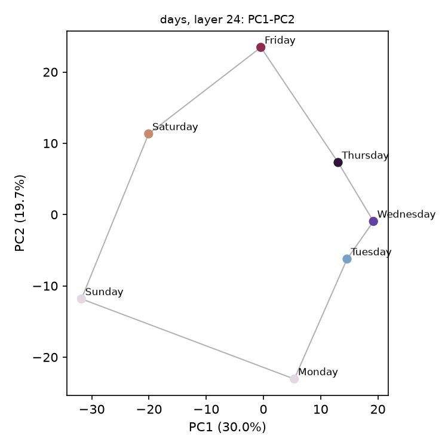
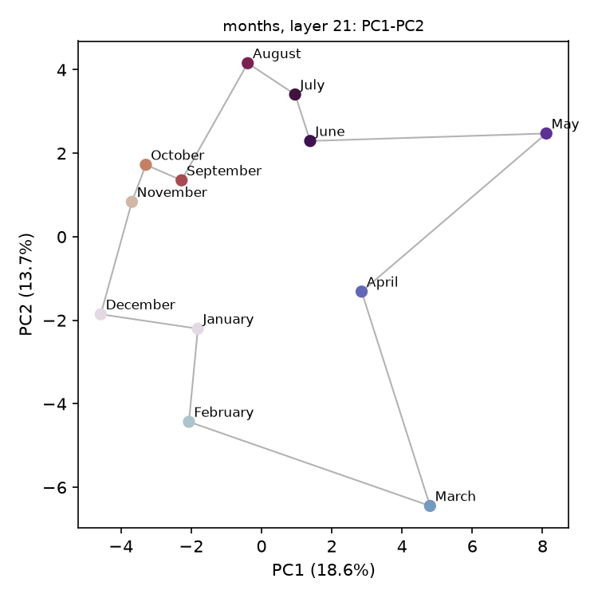
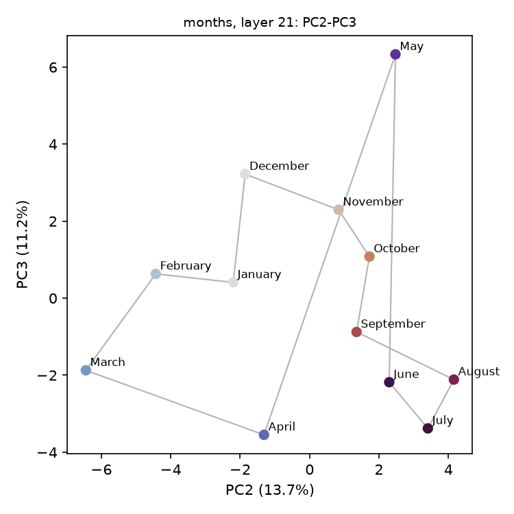
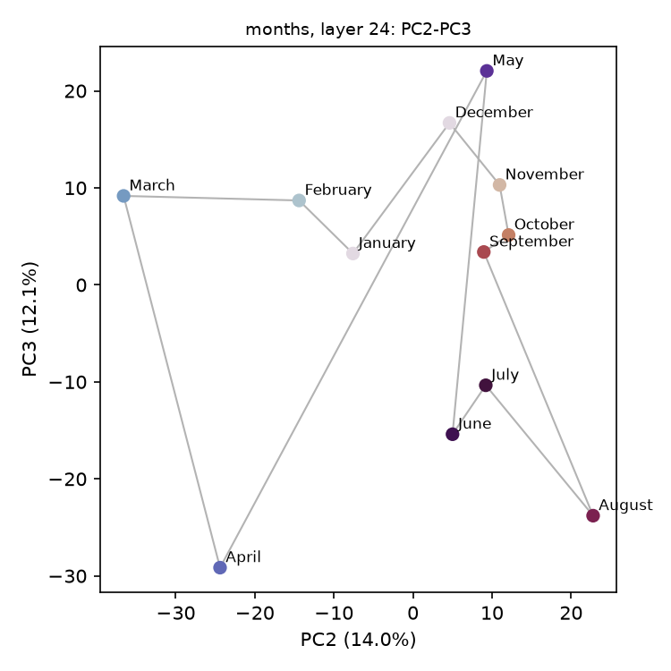
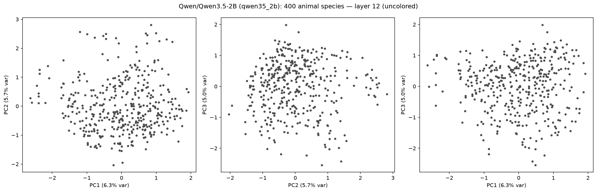
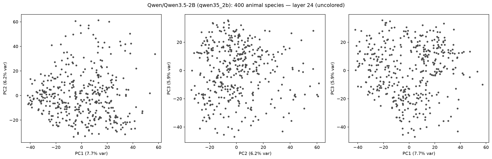
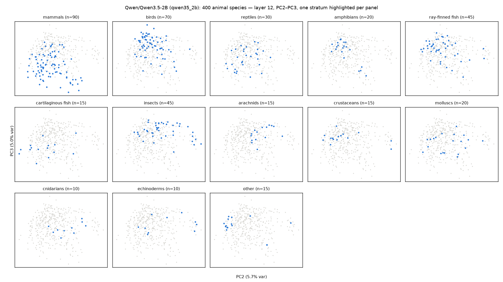
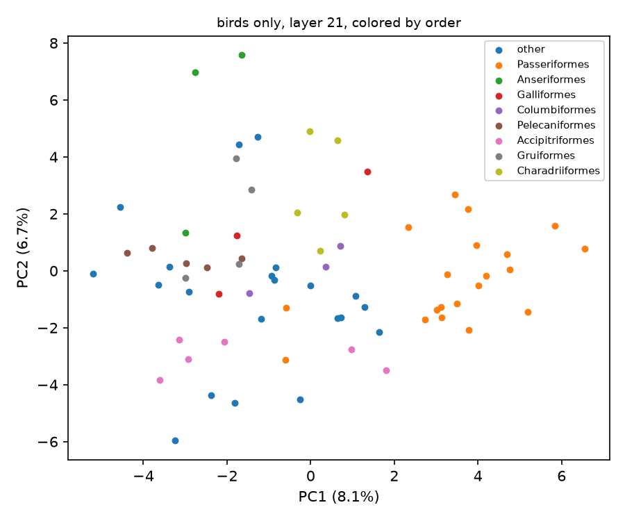
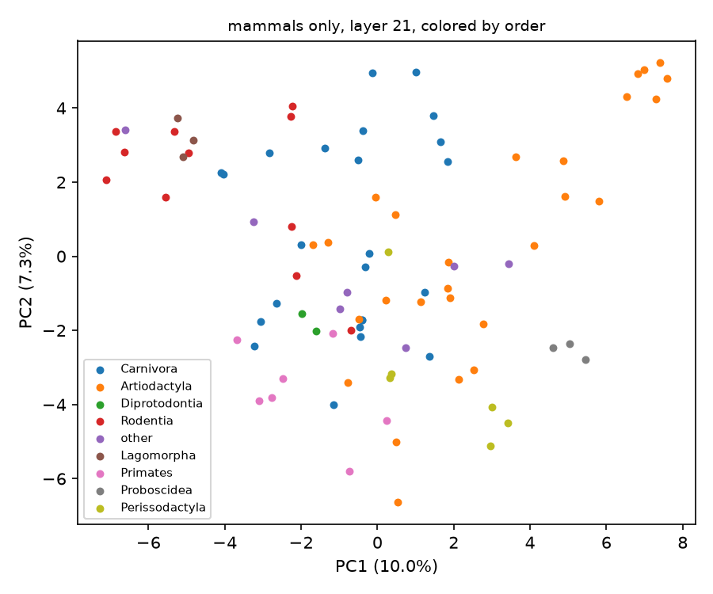

Libor "Burny" Burian · Qwen3.5-2B · 400 animal species · Open Tree of Life reference · code & paper · preregistration
Do the hidden states an LLM computes for animal names reflect the tree of life? Each point below is one species (mean residual-stream vector at the last name token over 8 prompts). Color = super-group (blue vertebrates, orange arthropods, green other invertebrates, gray other), marker = class; thin gray lines = the reference tree drawn with internal nodes at the centroid of their descendants. Use the slider to move through layers; hover for names.
Qwen3.5-2B unless noted. Generated by python -m phylogeo.run --phases report from results/; do not edit by hand.
| Question | Result | Verdict |
|---|---|---|
| Tree order *within* coarse groups, beyond names and popularity (H1, primary) | TA_within at layer 6 = 0.475 [95% CI 0.427, 0.535], cross-fitted 0.473; max-T p <0.001; strongest required control pythia410m_step0 0.402; chance 0.333 | supported |
| Global distance correlation with the tree (S1) | Mantel Spearman r = 0.362, Holm p 0.005 | supported |
| Order within taxonomic orders (S2) | TA = 0.445, Holm p 0.005 | supported |
| Survives when spelling points the wrong way (S3) | TA = 0.382, Holm p 0.360 | not supported |
| Survives when GloVe co-occurrence points the wrong way (S4) | TA = 0.372, Holm p 0.360 | not supported |
| Distances track divergence time beyond topology (S5) | partial Spearman 0.042, Holm p 0.360 | not supported |
| Phylogeny-vs-folk conflict triplets (whale: hippo or whale shark?) | representation picks the tree-closer animal in 11/36 (binomial p 0.029) | follows the folk/ecological partner |
| Learned 10-d flat subspace generalizes to held-out families (exploratory) | held-out r = 0.749 ± 0.010 vs shuffled tree -0.015, GloVe input 0.405 | exploratory |
| Tree-like (hyperbolic) metric (exploratory) | Gromov δ_rel = 0.322 vs matched Gaussian 0.460, class-blob 0.188, exact tree 0 | exploratory |
| The model *says* which species are related (exploratory) | chooses the tree-closer animal in 0.567 of 300 within-group triplets (binomial p 0.024) | exploratory |
| Latin binomials carry the same structure (exploratory) | TA 0.332 vs common names on the same triplets 0.530 | no |
| Late-layer top PC is an aquatic ↔ terrestrial habitat axis (Addendum A, held-out species) | marine vs ground mammals Holm p <0.001; waterbird ρ = -0.385 (Holm p <0.001); aerial birds ρ = -0.157 | aquatic end supported, aerial end not |
| Robust to seeds, template subsets, species subsamples (stage 6) | lowest TA_within over 20-fold perturbations 0.437; smallest margin over the best control 0.044 | robust |










| layer | PC1–3 var | C1 purity (null) p | C1 random-init | C2 mammals (null) p | C2 birds (null) p | C2 insects (null) p | C3 overlay/null p | C3b overlay/within-null p | reading |
|---|---|---|---|---|---|---|---|---|---|
| 0 | 13.7% | 0.40 (0.12) <0.001 | 0.39 | 0.34 (0.18) <0.001 | 0.13 (0.10) 0.060 | 0.42 (0.17) <0.001 | 0.72 <0.001 | 0.79 <0.001 | partial (C1 + one of C2/C3) |
| 1 | 13.7% | 0.39 (0.12) <0.001 | 0.19 | 0.32 (0.18) <0.001 | 0.13 (0.10) 0.065 | 0.40 (0.17) <0.001 | 0.65 <0.001 | 0.78 <0.001 | partial (C1 + one of C2/C3) |
| 2 | 9.8% | 0.31 (0.12) <0.001 | 0.16 | 0.30 (0.18) <0.001 | 0.15 (0.10) 0.021 | 0.40 (0.17) <0.001 | 0.71 <0.001 | 0.81 <0.001 | tree-consistent (checks 1-3 pass) |
| 3 | 12.5% | 0.47 (0.12) <0.001 | 0.15 | 0.40 (0.18) <0.001 | 0.28 (0.10) <0.001 | 0.44 (0.17) <0.001 | 0.64 <0.001 | 0.83 <0.001 | tree-consistent (checks 1-3 pass) |
| 4 | 16.7% | 0.74 (0.12) <0.001 | 0.14 | 0.44 (0.18) <0.001 | 0.31 (0.10) <0.001 | 0.50 (0.16) <0.001 | 0.42 <0.001 | 0.81 <0.001 | tree-consistent (checks 1-3 pass) |
| 5 | 16.6% | 0.73 (0.12) <0.001 | 0.14 | 0.39 (0.18) <0.001 | 0.35 (0.10) <0.001 | 0.54 (0.17) <0.001 | 0.42 <0.001 | 0.79 <0.001 | tree-consistent (checks 1-3 pass) |
| 6 | 16.1% | 0.68 (0.12) <0.001 | 0.14 | 0.38 (0.18) <0.001 | 0.35 (0.10) <0.001 | 0.46 (0.17) <0.001 | 0.44 <0.001 | 0.79 <0.001 | tree-consistent (checks 1-3 pass) |
| 7 | 15.7% | 0.62 (0.12) <0.001 | 0.14 | 0.37 (0.18) <0.001 | 0.34 (0.10) <0.001 | 0.46 (0.17) <0.001 | 0.48 <0.001 | 0.81 <0.001 | tree-consistent (checks 1-3 pass) |
| 8 | 15.8% | 0.51 (0.12) <0.001 | 0.14 | 0.35 (0.18) <0.001 | 0.32 (0.10) <0.001 | 0.45 (0.16) <0.001 | 0.59 <0.001 | 0.83 <0.001 | tree-consistent (checks 1-3 pass) |
| 9 | 16.3% | 0.46 (0.12) <0.001 | 0.13 | 0.34 (0.18) <0.001 | 0.29 (0.10) <0.001 | 0.40 (0.17) <0.001 | 0.64 <0.001 | 0.85 <0.001 | tree-consistent (checks 1-3 pass) |
| 10 | 16.5% | 0.41 (0.12) <0.001 | 0.13 | 0.32 (0.18) <0.001 | 0.25 (0.10) <0.001 | 0.40 (0.17) <0.001 | 0.68 <0.001 | 0.86 <0.001 | tree-consistent (checks 1-3 pass) |
| 11 | 17.4% | 0.34 (0.12) <0.001 | 0.14 | 0.31 (0.18) <0.001 | 0.22 (0.10) <0.001 | 0.43 (0.17) <0.001 | 0.73 <0.001 | 0.86 <0.001 | tree-consistent (checks 1-3 pass) |
| 12 | 17.0% | 0.35 (0.12) <0.001 | 0.13 | 0.32 (0.18) <0.001 | 0.21 (0.10) <0.001 | 0.41 (0.16) <0.001 | 0.71 <0.001 | 0.86 <0.001 | tree-consistent (checks 1-3 pass) |
| 13 | 17.9% | 0.29 (0.12) <0.001 | 0.13 | 0.34 (0.18) <0.001 | 0.20 (0.10) 0.002 | 0.39 (0.16) <0.001 | 0.75 <0.001 | 0.87 <0.001 | tree-consistent (checks 1-3 pass) |
| 14 | 19.2% | 0.28 (0.12) <0.001 | 0.14 | 0.34 (0.18) <0.001 | 0.18 (0.10) 0.002 | 0.36 (0.17) <0.001 | 0.77 <0.001 | 0.87 <0.001 | tree-consistent (checks 1-3 pass) |
| 15 | 15.4% | 0.54 (0.12) <0.001 | 0.13 | 0.35 (0.18) <0.001 | 0.28 (0.10) <0.001 | 0.50 (0.17) <0.001 | 0.57 <0.001 | 0.82 <0.001 | tree-consistent (checks 1-3 pass) |
| 16 | 15.8% | 0.66 (0.12) <0.001 | 0.15 | 0.36 (0.18) <0.001 | 0.31 (0.10) <0.001 | 0.48 (0.16) <0.001 | 0.52 <0.001 | 0.81 <0.001 | tree-consistent (checks 1-3 pass) |
| 17 | 14.8% | 0.66 (0.12) <0.001 | 0.15 | 0.40 (0.18) <0.001 | 0.30 (0.10) <0.001 | 0.45 (0.16) <0.001 | 0.52 <0.001 | 0.81 <0.001 | tree-consistent (checks 1-3 pass) |
| 18 | 14.4% | 0.56 (0.12) <0.001 | 0.13 | 0.42 (0.18) <0.001 | 0.33 (0.10) <0.001 | 0.49 (0.16) <0.001 | 0.55 <0.001 | 0.81 <0.001 | tree-consistent (checks 1-3 pass) |
| 19 | 16.4% | 0.68 (0.12) <0.001 | 0.14 | 0.39 (0.18) <0.001 | 0.31 (0.10) <0.001 | 0.49 (0.17) <0.001 | 0.45 <0.001 | 0.78 <0.001 | tree-consistent (checks 1-3 pass) |
| 20 | 18.4% | 0.71 (0.12) <0.001 | 0.15 | 0.39 (0.18) <0.001 | 0.36 (0.10) <0.001 | 0.51 (0.17) <0.001 | 0.41 <0.001 | 0.78 <0.001 | tree-consistent (checks 1-3 pass) |
| 21 | 18.3% | 0.71 (0.12) <0.001 | 0.14 | 0.45 (0.18) <0.001 | 0.34 (0.10) <0.001 | 0.48 (0.17) <0.001 | 0.41 <0.001 | 0.78 <0.001 | tree-consistent (checks 1-3 pass) |
| 22 | 18.1% | 0.71 (0.12) <0.001 | 0.14 | 0.44 (0.18) <0.001 | 0.33 (0.10) <0.001 | 0.43 (0.16) <0.001 | 0.42 <0.001 | 0.78 <0.001 | tree-consistent (checks 1-3 pass) |
| 23 | 17.4% | 0.68 (0.12) <0.001 | 0.14 | 0.47 (0.18) <0.001 | 0.33 (0.10) <0.001 | 0.41 (0.16) <0.001 | 0.44 <0.001 | 0.80 <0.001 | tree-consistent (checks 1-3 pass) |
| 24 | 19.8% | 0.59 (0.12) <0.001 | 0.13 | 0.41 (0.18) <0.001 | 0.30 (0.10) <0.001 | 0.39 (0.17) <0.001 | 0.57 <0.001 | 0.84 <0.001 | tree-consistent (checks 1-3 pass) |
H1 (primary) — n = 400 species, 17626 sampled triplets, 11094 within-stratum head-noun-disjoint.
| quantity | value |
|---|---|
| cross-fitted TA_within | 0.473 |
| TA_within at modal layer 6 [95% clade-bootstrap CI] | 0.475 [0.427, 0.535] |
| max-T permutation p (all layers) | <0.001 |
| difference vs qwen35_2b_random [95% CI] | [+0.014, +0.163] |
| difference vs pythia410m_step0 [95% CI] | [+0.008, +0.146] |
| difference vs char3 [95% CI] | [+0.085, +0.216] |
| difference vs input_embedding [95% CI] | [+0.074, +0.203] |
| difference vs token_count [95% CI] | [+0.046, +0.175] |
| difference vs log_popularity [95% CI] | [+0.066, +0.198] |
| criterion: maxT_p<0.05 | yes |
| criterion: ci_lower>1/3 | yes |
| criterion: beats_required_controls | yes |
| **H1 supported** | **yes** |
| meaningful effect (≥ 0.40) | yes |
Secondary hypotheses (Holm-adjusted across S1–S5)
| id | statistic | value | p | Holm p |
|---|---|---|---|---|
| S1 | Mantel Spearman (cosine vs path length) at modal layer | 0.362 | <0.001 | 0.005 |
| S2 | TA at modal layer (n = 3173 triplets) | 0.445 | <0.001 | 0.005 |
| S3 | TA at modal layer (n = 3034 triplets) | 0.382 | 0.120 | 0.360 |
| S4 | TA at modal layer (n = 6072 triplets) | 0.372 | 0.153 | 0.360 |
| S5 | pooled within-rank partial Spearman (distance vs TimeTree age, controlling LCA depth) | 0.042 | 0.120 | 0.360 |
TA_within for every representation (model and controls at their modal layer; chance = 0.333)
| representation | TA_within | 95% CI | Mantel r (path length) |
|---|---|---|---|
| qwen35_2b | 0.475 | [0.427, 0.535] | 0.362 |
| qwen35_2b_random | 0.382 | [0.345, 0.445] | 0.002 |
| pythia410m_step0 | 0.402 | [0.354, 0.460] | -0.006 |
| pythia410m | 0.423 | [0.378, 0.500] | 0.230 |
| char3 | 0.332 | [0.296, 0.368] | 0.027 |
| glove | 0.395 | [0.356, 0.454] | 0.137 |
| token_count | 0.383 | [0.326, 0.413] | -0.001 |
| log_popularity | 0.365 | [0.300, 0.398] | 0.296 |
| class_oracle | 0.333 | [0.333, 0.333] | 0.508 |
| rank_oracle | 0.644 | [0.617, 0.687] | 0.502 |
| tree_oracle | 1.000 | [1.000, 1.000] | 0.449 |
| input_embedding | 0.354 | [0.293, 0.396] | 0.035 |
| glove_known_names_only | 0.400 | – | – |
Depth profile (TA over all triplets by deepest rank shared by the three species)
| representation | none (n=1190) | phylum (n=3089) | class (n=8673) | order (n=4629) | family (n=42) | genus (n=3) |
|---|---|---|---|---|---|---|
| qwen35_2b | 0.441 | 0.669 | 0.558 | 0.514 | 0.524 | 0.000 |
| qwen35_2b_random | 0.348 | 0.446 | 0.396 | 0.466 | 0.452 | 0.333 |
| pythia410m_step0 | 0.354 | 0.557 | 0.451 | 0.481 | 0.476 | 0.000 |
| pythia410m | 0.466 | 0.607 | 0.493 | 0.487 | 0.500 | 0.000 |
| char3 | 0.365 | 0.494 | 0.443 | 0.467 | 0.401 | 0.000 |
| glove | 0.388 | 0.556 | 0.466 | 0.537 | 0.381 | 0.333 |
| token_count | 0.342 | 0.331 | 0.387 | 0.374 | 0.393 | 0.333 |
| log_popularity | 0.521 | 0.465 | 0.348 | 0.397 | 0.286 | 0.000 |
| class_oracle | 0.580 | 0.579 | 0.333 | 0.333 | 0.333 | 0.333 |
| rank_oracle | 0.884 | 0.801 | 0.700 | 0.674 | 0.579 | 0.333 |
| tree_oracle | 1.000 | 1.000 | 1.000 | 1.000 | 1.000 | 1.000 |
| input_embedding | 0.370 | 0.527 | 0.453 | 0.449 | 0.429 | 0.222 |


Click legend entries to show or hide models (stage-5 models are hidden at first).
| representation | layer | chose tree-closer partner | accuracy | binomial p (vs 0.5) |
|---|---|---|---|---|
| qwen35_2b | 6 | 11/36 | 0.31 | 0.029 |
| qwen35_2b_random | 6 | 13/36 | 0.36 | 0.132 |
| pythia410m_step0 | 6 | 13/36 | 0.36 | 0.132 |
| pythia410m | 6 | 10/36 | 0.28 | 0.011 |
| char3 | 0 | 9/36 | 0.25 | 0.004 |
| glove | 0 | 14/36 | 0.39 | 0.243 |
Per triplet (qwen35_2b, layer 6; ✓ = representation closer to the tree-closer partner):
| anchor | tree-closer | other | type | qwen35_2b | qwen35_2b_random | pythia410m_step0 | pythia410m | char3 | glove |
|---|---|---|---|---|---|---|---|---|---|
| blue whale | hippopotamus | whale shark | ecology+lexical | ✗ | ✗ | ✓ | ✗ | ✗ | ✗ |
| Nile crocodile | house sparrow | green iguana | folk reptile | ✗ | ✗ | ✓ | ✗ | ✗ | ✗ |
| Atlantic bluefin tuna | human | great white shark | folk fish | ✗ | ✗ | ✗ | ✗ | ✗ | ✗ |
| common starfish | human | common octopus | folk sea creature+lexical | ✗ | ✓ | ✗ | ✗ | ✗ | ✗ |
| Atlantic horseshoe crab | goliath birdeater | blue crab | lexical crab | ✗ | ✗ | ✗ | ✗ | ✗ | ✗ |
| little brown bat | cattle | house mouse | folk flying mouse | ✗ | ✓ | ✓ | ✗ | ✓ | ✗ |
| rock hyrax | African bush elephant | guinea pig | folk rodent-like | ✓ | ✗ | ✓ | ✓ | ✗ | ✓ |
| thylacine | red kangaroo | gray wolf | convergence | ✗ | ✗ | ✗ | ✓ | ✗ | ✓ |
| European eel | human | sea lamprey | folk eel-like | ✗ | ✓ | ✗ | ✗ | ✓ | ✗ |
| western honey bee | American lobster | goliath birdeater | folk bugs | ✓ | ✓ | ✓ | ✓ | ✓ | ✓ |
| sugar glider | red kangaroo | southern flying squirrel | convergence | ✗ | ✓ | ✗ | ✓ | ✓ | ✗ |
| aardvark | African bush elephant | giant anteater | convergence | ✗ | ✓ | ✗ | ✗ | ✗ | ✗ |
| Chinese pangolin | cat | giant anteater | convergence | ✗ | ✗ | ✗ | ✗ | ✗ | ✗ |
| European hedgehog | common shrew | North American porcupine | convergence spines | ✓ | ✗ | ✗ | ✓ | ✗ | ✗ |
| West Indian manatee | African bush elephant | walrus | ecology | ✓ | ✓ | ✓ | ✗ | ✓ | ✓ |
| coelacanth | human | Atlantic bluefin tuna | folk fish | ✗ | ✓ | ✓ | ✓ | ✗ | ✗ |
| Australian lungfish | human | Atlantic salmon | folk fish | ✗ | ✓ | ✓ | ✗ | ✓ | ✓ |
| Komodo dragon | king cobra | Nile crocodile | folk lizard-like | ✗ | ✗ | ✓ | ✗ | ✗ | ✓ |
| acorn barnacle | edible crab | common limpet | folk shell | ✗ | ✗ | ✗ | ✗ | ✓ | ✓ |
| common woodlouse | American lobster | seven-spot ladybird | folk bug | ✗ | ✓ | ✓ | ✗ | ✗ | ✗ |
| elephant shrew | African bush elephant | common shrew | lexical shrew | ✗ | ✗ | ✗ | ✗ | ✓ | ✗ |
| red panda | raccoon | giant panda | lexical panda | ✗ | ✗ | ✗ | ✗ | ✗ | ✗ |
| koala | red kangaroo | brown bear | folk koala bear | ✓ | ✗ | ✓ | ✓ | ✗ | ✓ |
| killer whale | bottlenose dolphin | blue whale | lexical whale | ✗ | ✗ | ✗ | ✗ | ✗ | ✗ |
| Indian flying fox | little brown bat | red fox | lexical fox | ✓ | ✓ | ✗ | ✗ | ✗ | ✗ |
| California sea lion | harbor seal | lion | lexical lion | ✓ | ✗ | ✗ | ✗ | ✗ | ✗ |
| common starfish | purple sea urchin | Atlantic cod | lexical fish | ✓ | ✗ | ✓ | ✓ | ✗ | ✓ |
| moon jellyfish | sea anemone | Atlantic cod | lexical fish | ✓ | ✗ | ✗ | ✓ | ✗ | ✓ |
| silverfish | western honey bee | goldfish | lexical fish | ✗ | ✗ | ✗ | ✗ | ✗ | ✗ |
| guinea pig | house mouse | pig | lexical pig | ✗ | ✗ | ✗ | ✗ | ✗ | ✗ |
| seahorse | Atlantic cod | horse | lexical horse | ✗ | ✓ | ✗ | ✗ | ✗ | ✓ |
| electric eel | channel catfish | European eel | lexical eel | ✗ | ✗ | ✗ | ✗ | ✗ | ✗ |
| spotted hyena | cat | dog | folk dog-like | ✓ | ✓ | ✗ | ✗ | ✗ | ✗ |
| fossa | meerkat | cat | folk cat-like | ✓ | ✗ | ✓ | ✓ | ✗ | ✓ |
| pronghorn | giraffe | impala | folk antelope | ✗ | ✗ | ✗ | ✗ | ✗ | ✓ |
| bottlenose dolphin | cattle | great white shark | ecology | ✗ | ✗ | ✗ | ✗ | ✓ | ✓ |
Layer 6 (the stage-1b modal layer).
Flat-subspace probe (k = 10, PCA-100 fit in-fold, 5-fold family holdout, mean ± sd over seeds)
| input / target | held-out-family Pearson r | Spearman | train–test r | train–train r |
|---|---|---|---|---|
| model | 0.749 ± 0.010 | 0.749 | 0.848 | 0.959 |
| shuffled_tree | -0.015 ± 0.013 | -0.014 | 0.170 | 0.562 |
| random_init | 0.016 ± 0.013 | 0.012 | 0.162 | 0.519 |
| glove | 0.405 ± 0.005 | 0.411 | 0.588 | 0.845 |
Selectivity (model − shuffled-tree, held-out families): 0.763
Gromov δ_rel (lower = more tree-like; 0 for a tree metric)
| representation | δ_rel |
|---|---|
| model | 0.322 |
| spectrum-matched Gaussian (10 draws) | 0.460 ± 0.010 |
| class-blob simulation (10 draws) | 0.188 ± 0.007 |
| tree oracle (path length) | 0.000 |
Neighbor-joining tree vs reference (normalized Robinson–Foulds; 0 = identical)
| RF | |
|---|---|
| model | 0.812 |
| label-permuted (20) | 0.988 ± 0.0009 (p = 0.048) |
kNN geodesic vs angular distance (at the probe layer; gain on the class-blob null for reference)
| metric | angular | geodesic | gain | class-blob null gain |
|---|---|---|---|---|
| Mantel Spearman vs path length | 0.362 | 0.251 | -0.110 | +0.066 |
| TA_within | 0.471 | 0.444 | -0.027 | +0.002 |


Behavior (answer-letter log-odds, averaged over both answer orders; binomial test vs 0.5, two-sided)
| test | n | accuracy | binomial p |
|---|---|---|---|
| conflict triplets: chose the tree-closer animal | 36 | 0.306 | 0.029 |
| within-stratum species triplets: chose the tree-closer animal | 300 | 0.567 | 0.024 |
| class word correct (argmax over candidate class words) | 385 | 0.909 | – |
On the same species triplets, the layer-6 representation is closer to the tree-closer animal in 0.613 of cases; behavior and representation agree on 0.633.
Class-word accuracy by stratum: amphibians 1.00, arachnids 0.93, birds 0.99, cartilaginous fish 1.00, cnidarians 0.80, crustaceans 0.87, echinoderms 0.50, insects 0.76, mammals 0.97, molluscs 0.65, ray-finned fish 0.96, reptiles 0.97.
Causal tests, final run (deviation 19) (layer 6; k = 10 probe subspace fit on half of the families; 188 held-out species; captured variance 0.100)
| hypothesis | probe subspace | random subspaces: mean [max] | rank p | Holm p | secondary |
|---|---|---|---|---|---|
| C-abl: drop in log P(correct class) | 0.083 | 0.016 [0.058] (n = 20) | 0.048 | – | Wilcoxon over species p = <0.001 |
| C-swap: answer switches to the source's class | 0.065 | 0.029 [0.045] (n = 10) | 0.091 | – | no edit: 0.020 (200 pairs) |
Off-target next-token loss on neutral sentences: no edit 3.2728, probe subspace ablated 3.2324, random ablated 3.2553.
Single-change ablations (TA_within on the stage-1b triplets; modal layer 6)
| variant | TA_within (modal layer) | max over layers (layer) | Mantel r (modal) |
|---|---|---|---|
| main (last token, per-template centering) | 0.475 | 0.475 (6) | 0.362 |
| raw cosine (no centering) | 0.424 | 0.446 (9) | 0.293 |
| z-scored dimensions | 0.480 | 0.480 (6) | 0.375 |
| stratum-centered | 0.483 | 0.483 (6) | -0.052 |
| mean over name tokens | 0.399 | 0.425 (4) | 0.234 |
| raw text (no chat template) | 0.482 | 0.482 (6) | 0.366 |
| scientific binomials (genus-split triplets) (common names on the same triplets: 0.530) | 0.332 | 0.386 (20) | 0.134 |
Polysemous names included (n = 414): TA_within 0.470 (primary set 0.475).
Probe ablations (held-out families, mean of 3 seeds)
| probe | held-out r | within-group held-out Spearman | train r |
|---|---|---|---|
| angular_k2 | 0.631 | 0.117 | 0.780 |
| angular_k3 | 0.716 | 0.230 | 0.904 |
| angular_k5 | 0.737 | 0.285 | 0.938 |
| angular_k10 | 0.750 | 0.351 | 0.959 |
| angular_k20 | 0.753 | 0.345 | 0.966 |
| euclid_k2 | 0.699 | 0.202 | 0.853 |
| euclid_k5 | 0.730 | 0.298 | 0.912 |
| euclid_k10 | 0.736 | 0.342 | 0.932 |
| poincare_k2 | 0.675 | 0.194 | 0.843 |
| poincare_k5 | 0.721 | 0.245 | 0.918 |
| poincare_k10 | 0.728 | 0.309 | 0.932 |
| angular_k10_shuffled_tree | 0.034 | 0.034 | 0.585 |
kNN geodesic, k sweep (smallest connected k = 3)
| k | Mantel r vs path length | TA_within |
|---|---|---|
| 3 | 0.251 | 0.448 |
| 6 | 0.391 | 0.474 |
| 10 | 0.386 | 0.470 |
| 20 | 0.432 | 0.469 |
| 40 | 0.401 | 0.476 |
| angular | 0.362 | 0.475 |
Held-out: 79 mammals, 80 birds; axis = oriented PC1 of layer 21 (primary set).
| test | statistic | one-sided p | Holm p |
|---|---|---|---|
| M1_marine_lt_ground | median -0.58 (n = 6) vs ground 1.68 (n = 61) | <0.001 | <0.001 |
| M2_aerial_gt_ground | not evaluable (n = 0) | – | – |
| B1_water_negative | Spearman ρ = -0.385 | <0.001 | <0.001 |
| B2_aerial_positive | Spearman ρ = -0.157 | 0.917 | 0.917 |
(no stage-5 results yet)
Layer 6; main-run TA_within 0.475. Mean ± SD [2.5th, 97.5th percentile] over repetitions; margin = model minus the best of the untrained and nuisance controls in the same repetition.
| perturbation | repetitions | TA_within | min | margin over best control (min) |
|---|---|---|---|---|
| triplet sampling seed | 20 | 0.474 ± 0.002 [0.469, 0.476] | 0.467 | 0.077 (0.070) |
| 80% species subsample | 20 | 0.475 ± 0.019 [0.442, 0.511] | 0.437 | 0.084 (0.044) |
| template halves (4 of 8) | 20 | 0.475 ± 0.004 [0.469, 0.481] | 0.469 | – (best layer: 6, 6, 6, 6, 6, 6, 6, 6, 6, 6, 6, 6, 6, 6, 6, 6, 6, 6, 6, 22) |
| leave one template out | 8 | 0.478 ± 0.005 [0.471, 0.483] | 0.471 | – (best layer: 6, 6, 6, 6, 6, 6, 6, 6) |
| single template | 8 | 0.467 ± 0.006 [0.458, 0.475] | 0.456 | – (best layer: 6, 6, 22, 6, 24, 22, 6, 6) |
| cross-fit family-split seed | 20 | 0.472 ± 0.004 [0.466, 0.478] | 0.466 | – (modal layer: 6, 6, 6, 6, 6, 6, 6, 6, 7, 6, 6, 6, 6, 6, 21, 6, 7, 6, 6, 6) |
Triplets per decision node K (one draw each)
| K | within triplets | qwen35_2b | qwen35_2b_random | pythia410m_step0 | char3 | token_count | log_popularity |
|---|---|---|---|---|---|---|---|
| 50 | 3710 | 0.472 | 0.380 | 0.398 | 0.337 | 0.381 | 0.368 |
| 100 | 6466 | 0.476 | 0.384 | 0.396 | 0.331 | 0.389 | 0.366 |
| 200 | 11097 | 0.476 | 0.382 | 0.395 | 0.333 | 0.381 | 0.363 |
| 400 | 18631 | 0.475 | 0.385 | 0.397 | 0.332 | 0.379 | 0.369 |
Flat probe, 20 fresh seeds (folds and init): held-out Pearson r 0.750 ± 0.012 [0.728, 0.768]; within-group held-out Spearman 0.338 ± 0.033 [0.281, 0.399].
Mantel r vs path length under 80% species subsamples: 0.362 ± 0.009 [0.349, 0.376]; under template halves: 0.361 ± 0.006 [0.349, 0.368].
Minimum detectable TA_within at 80% power: 0.386
| signal | mean TA_within | sd | power |
|---|---|---|---|
| 0.0 | 0.323 | 0.019 | 0.00 |
| 0.05 | 0.331 | 0.028 | 0.10 |
| 0.1 | 0.337 | 0.018 | 0.03 |
| 0.15 | 0.348 | 0.021 | 0.20 |
| 0.2 | 0.358 | 0.020 | 0.28 |
| 0.3 | 0.386 | 0.021 | 0.80 |
| 0.5 | 0.472 | 0.022 | 1.00 |
All numbers are generated from results/ by python -m phylogeo.run --phases report,site.